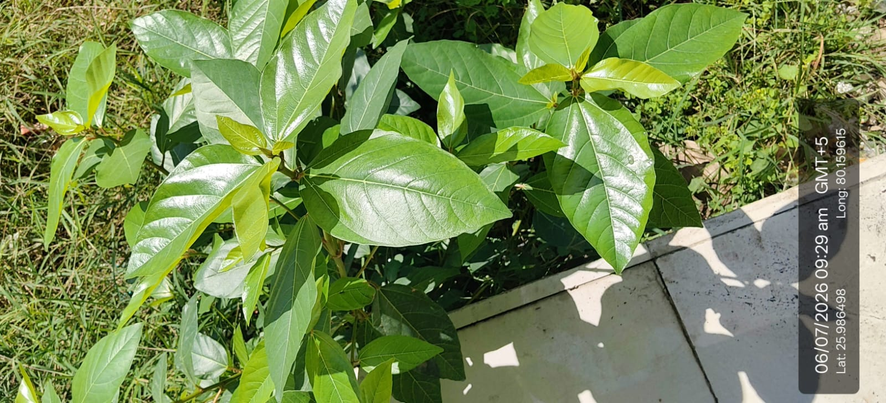

Visual record04 photographs



| Scientific name | Ficus racemosa |
|---|---|
| Family | Moraceae |
| Category | Trees |
Habitat & Growing Conditions
- Native to India, Southeast Asia, and Australia
- Very common in UP including Kanpur area in your coordinates. Found along riverbanks, wetlands, roadsides, and in wastelands
- Thrives in tropical to subtropical climate. Likes moist areas and can grow near water
- Grows in a variety of soils but prefers fertile, well-drained loamy soil
- Deciduous to semi-evergreen tree, 10-20 m tall when mature. Leaves are large, glossy, ovate with prominent veins like in your photo. Young leaves are light green and shiny
Economic Importance
- Food: Ripe fruits are edible and eaten fresh or made into jam. Also used as fodder for cattle, goats, and birds
- Provides food and shelter for birds, bats, and insects. Good for soil conservation along riverbanks
- Religious: Considered sacred in Hinduism. Used in rituals and worship
Medicinal Importance
- Bark, leaves, roots, and latex used in Ayurveda for diarrhea, diabetes, wounds, and skin diseases. Has anti-inflammatory and antimicrobial properties. Note: Consult a healthcare professional before any medicinal use
- Timber & Other: Wood is soft and used for making boxes, fuel, and agricultural implements. Latex used for mending pottery